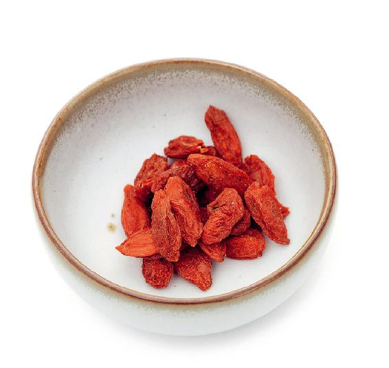
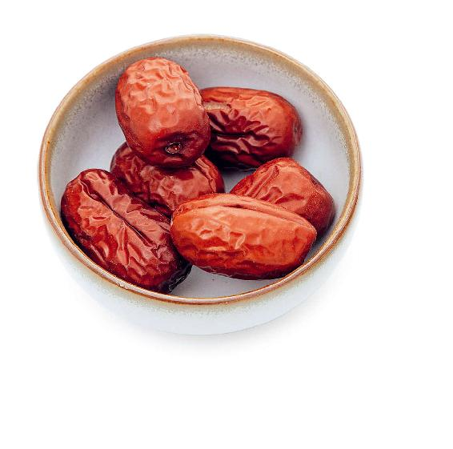
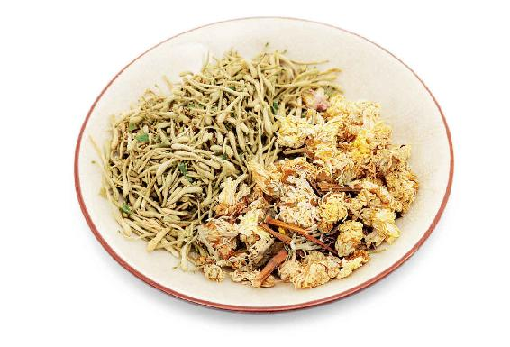
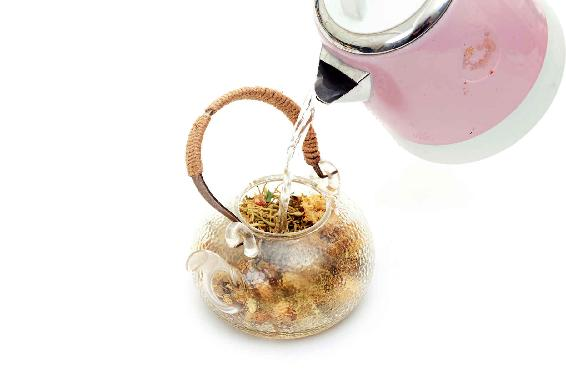

眼睛的保养其实是一个很大的话题，它包括两个部分，第一是“保”，第二就是“养”。
保和养有什么区别呢？
保就是保护，保护我们的眼睛不受到外来的伤害，比如注意防范手机、电脑、电视等发出的蓝光；养就是滋养，给我们的眼睛提供充足的营养，让它的功能不要过早地减退。
我们的眼睛要想做到既能保也能养，就需要把饮食的调养和外部的调养结合在一起。
从秋天的寒露节气到整个冬天，是我们保养眼睛的关键时期。因为眼睛最重要的就是靠肝血来滋养，“肝开窍于目”，肝血是滋养眼睛的。如果一个人肝血不足，就容易双目干涩。眼睛感到很干，泪液分泌不足，也容易视力减退，提前变成老花眼。
现在有很多人到四十几岁眼睛就已经老花了，而且眼睛的老花是不可逆转的。所以在秋冬时节，我们要好好地滋养肝血，让它能够好好地滋养我们的眼睛。
1.枸杞
在养肝血的食物中，枸杞是明目的好材料，所以古人把枸杞称为明目子。也就是说，多吃枸杞可以让人眼睛明亮、视力好，因为枸杞很能滋养肝血，而且滋养肝血之后，它的营养成分可以直达眼睛。

2.大枣
大枣也能滋养肝血，进而滋养我们的眼睛。
枸杞和大枣滋养眼睛有一点点区别。如果您是双目干涩，有干眼症，那您就多吃枸杞；如果您的眼睛容易迎风流泪，那您就多吃大枣。
有的朋友早上起床后眼屎特别多，虽然眼屎也属于眼睛分泌物，但它里面是有湿热的。因此，您要先祛湿热再补。这时候可以喝几天鱼腥草茶，等湿热清除掉以后，眼屎就会变少了。

当我们的眼睛缺乏肝血滋养的时候，还可以用外养法来辅助调理。
我们可以把几味中药放在眼罩里面，加热后热敷眼睛，让眼睛局部的气血加速循环，从而排出毒素，这也是一个非常好的从外部来保养眼睛的方法。
双花茶

原料：金银花10克、菊花10克。

做法：
1.把金银花、菊花放入一个玻璃杯子里，用沸水冲泡。
2.泡1分钟左右，不要盖杯盖，等水温稍微降下来一点，用手在杯口上面感受一下水蒸气，如果不是很烫，就拿起杯子，让水蒸气对准眼睛进行熏蒸。
3.熏蒸3〜5分钟，如果觉得很舒服，还可以再多蒸一会儿。
允斌叮嘱：
注意调节距离的远近，因为水的温度有高有低，每个人皮肤的承受能力也是不一样的，不要烫伤皮肤。
平时眼睛比较干涩或者是用眼过度，觉得眼睛很疲劳的人，当对眼睛进行熏蒸的时候，那种感受是非常舒服的。因为熏蒸是通过热让气血循环起来，血液循环加快，这样可以缓解眼睛局部的疲劳，再加上金银花和菊花的药性的渗透，就可以让我们的眼睛得到滋养。
等到茶变得温凉了，没有什么水蒸气了，您还可以喝一点这个茶，让金银花和菊花的药性从内部来滋养我们的眼睛。
如果您打算喝这道茶，也不妨在一开始泡的时候就把枸杞放进去，最后还可以吃这个枸杞，发挥枸杞滋养肝血的作用。
这个方子里面，金银花是清热解毒的；菊花也可以清热解毒，并且它是专门调理眼睛问题的，菊花明目的功效也是非常好的。如果您平时经常用眼、眼睛容易疲劳，可以用这个方法来熏一熏自己的眼睛。
经常用这个方法熏蒸眼睛还有一个好处，就是它能促进眼部的气血循环，对缓解眼睛浮肿有一定的作用，还能预防老年性的白内障。
前面讲的眼睛内调和外养的方法看似不同，却有一个共同点，那就是调养血。
内调通过内部来滋补肝血进而滋养眼睛；外调通过外部的药物熏蒸或者热敷来促进眼睛局部气血的循环。一个补血，一个活血，这样一来，我们的眼睛就能得到充分的滋养和保护了。当然，在每一个季节保养眼睛的食材还有所不同，以后我再跟大家分享。